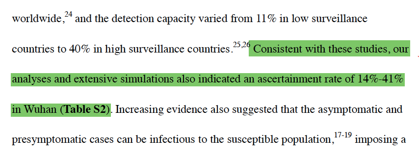
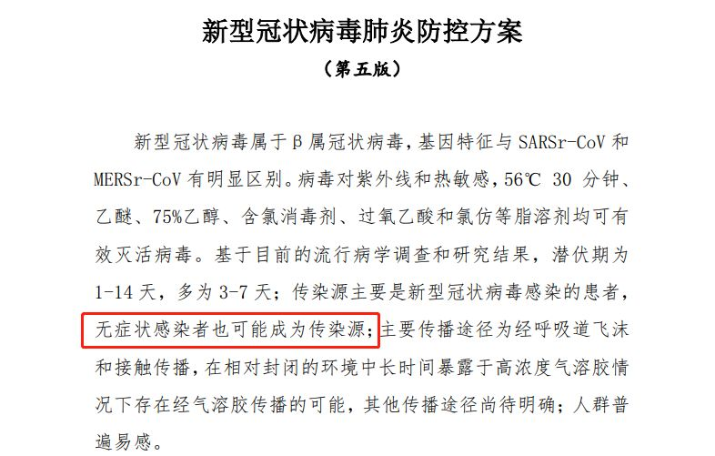
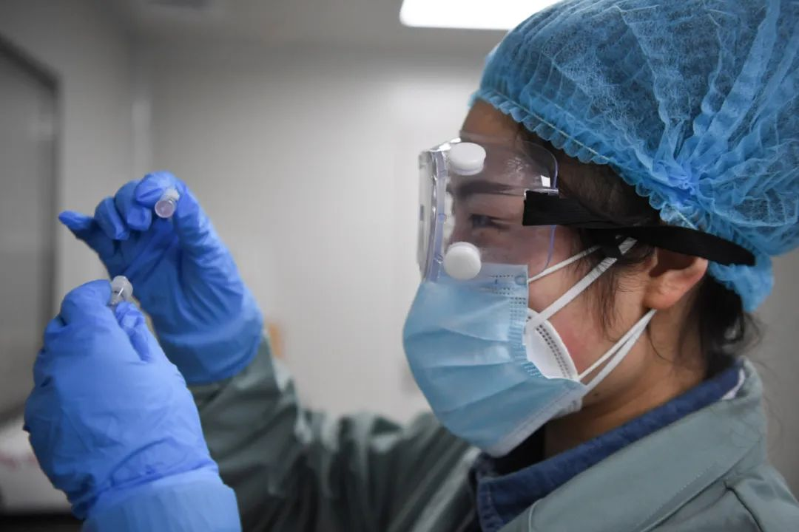
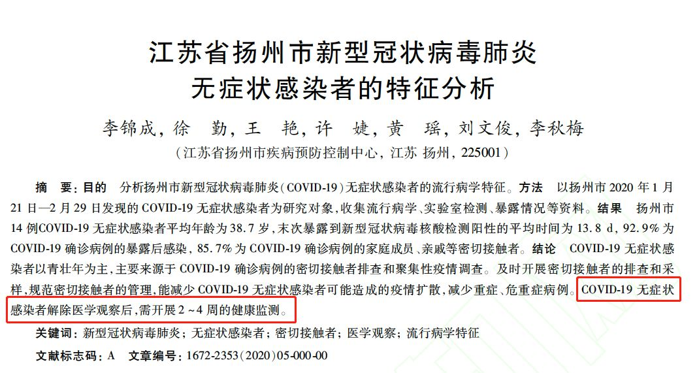

无症状感染者才是隐患所在，《自然》杂志称可能导致新冠疫情二次暴发
原文链接 备份链接 无症状感染者正再次成为焦点，这些感染者让新冠疫情的遏止变得更加艰难。 3 月 20 日，《自然》杂志报道称，60% 的新冠感染者可能属于无症状或者症状轻微，而这些感染者可能会导致疫情二次暴发。 无独有偶，3 月 16 …


作为一种全新的病毒，新冠病毒的各种特征还在被不断发现和挖掘。
无症状感染者，再一次成为公众所重点关注和警惕的对象。3月20日，学术期刊Nature发表了一篇关于新冠病毒的报道，这篇题为《隐秘的感染者可能引发新一轮疫情暴发》（Covert coronavirus infections could be seeding new outbreaks ）的文章整合了数篇研究得出结论，揭示“‘隐藏感染者’（轻症或者无症状患者）有可能占到所有感染数量的60%”。

尽管这样的讯息是来自模型的建构，受到诸多条件制约，准确率有限，但是无疑会在疫情逐渐受到控制的当下，为人们心里还未消去的疑虑带来新的变数。
无症状感染者会成为疫情防控的新一轮难点吗？我们需要重新认识“无症状感染者”。

60%的无症状感染者？
值得注意的是，上述所提及的Nature文章并非严格的研究论文，是在“新闻”（News）栏目发布的消息。报道综合了三篇取样标准和研究方法都不一样的论文，因此从中得知的结论还需要仔细看待。
以直接被引用结论的第一篇研究为例，这项研究目前发表在医学预印平台MedRxiv上，来自华中科技大学的邬堂春教授是这项研究的负责人。他所领衔的团队收集了1月11日至2月18日的接近两万六千名实验室确诊病例，在此基础上建构出研究模型。

而被广泛引述的60%无症状感染者的信息，则来自项目的研究结果，邬教授表示，“根据我们最保守的估计，至少59%的感染者没有经过检测，并可能感染他人。这也许可以解释为什么病毒传播得如此之快。”
从论文里可以看到模型推算的过程：研究者推测武汉的确诊率为14%~41%，这里的确诊率指的是所有感染者中被诊断出来的比例；随后则反推出没有被诊断出的概率。“60%的无症状感染者”的数据，由此得来。

但是建构的模型不同于流行病学调查，需要考虑模型所涉及的种种条件。比如Nature的报道里引用的专家意见就提到，该模型假设每个人有同样的机会与其他人接触，在假设这种“均匀接触”的情况下，有存在高估了传播率和夸大感染数量的可能。因此如果只是看到一份数据的结论便被吓到，大可不必，但是专家也同时提到“结果大致正确”。也就是说我们仍需对无症状感染者提高警惕。
找出他们“藏”在感染患者中的比例，就能很好地解决病毒是如何传播的流行病学难题。
很难说无症状感染者就是完全没有症状，早在1月29日发布的新冠病毒防控方案第三版里，就对这类患者进行了划分。
根据定义，无症状感染者指的是没有临床症状，但是呼吸道标本病原学检测呈阳性的患者（最新一版的防控方案里增加了抗体检测的指标）。随后在2月5日更新的诊疗方案第五版里，也首次明确表示“无症状感染者也可能成为传染源”。

新冠病毒防控方案第五版里，首次明确表示“无症状感染者也可能成为传染源”
根据报道，全国最早通报的一例疑似无症状感染者出现在1月初。一名1月10日从武汉回到河南安阳的女子，她的五名亲人先后被确诊为新冠肺炎；这些患者都没有武汉的居住或者旅行史，但都与该女子有接触史，但其本人并未出现症状。
而这名女子有否接受过核酸检测，在最早的报道里没有提及；安阳市疾控中心的工作人员在接受媒体采访时表示，对她有否做肺部CT影像的情况并不了解。
现实中，无症状感染者是否具有典型临床特征以外的症状，或者只是具有轻微的症状而没得到察觉，仍然待更多的案例分析。

确诊病例的疑惑
当下受到关注的焦点在于，无症状感染者在一段时间内没有纳入到确诊病例的分类里。此前发生的黑龙江核减病例的事件争议就在于，无症状感染者能否合并在确诊病例进行报告。
在最新一版的新冠肺炎防控方案里，是将疑似病例、确诊病例、无症状感染者等分别单列为监测案例的。公开资料显示，无症状感染者不计入确诊病例，并且不对外公布。

但是实际上针对无症状感染者的措施和确诊病例一样——都需要在网络直报系统中进行报告，也会被纳入病例报告和管理，其密切接触者同样需要隔离和观察。在知网搜索到的不同省份流行病学特征分析报告里，也能找到无症状感染者的信息。
随着疫情逐渐受控，新出现的任何状况都会成为下一步发展的参考坐标，尤其是位于疫情中央的武汉。
3月20日下午，网上流传出武汉硚口区一个综合社区“又有新增病例”的通知，让多日来没有新增确诊病例的武汉变得紧张起来。随后硚口区的防控指挥部回应称，这名男子为“无症状感染者”，并非确诊病例。他在前两次的检测中一阴一阳，20日的检测结果则是阴性，按照防控方案的定义，他的确不能算是确诊病例。

但是目前，这很难抹去大众的认知里把感染者与确诊病例划上等号的印象，这种错位成为了当下公众的疑惑。针对愈发受到关注的情况，武汉市卫健委在23日的专家咨询会上回复了多个受到热议的问题。比如为何不把无症状患者纳入到确诊病例的疑问，武汉卫健委的回应是：
“按照《新型冠状病毒肺炎诊疗方案（试行第七版）》定义，疑似及确诊病例需具备临床表现。无症状感染者因无临床表现，需要集中隔离14天并做进一步的检测来进行判断。如果无症状感染者在隔离期间出现了症状，则将其作为确诊病例报告并公布。”
这意味着，无症状感染者只有出现了临床症状才会成为确诊病例。那么无症状感染的数量究竟有多少？与上述提及的模型推测比例而言，样本量庞大的流行病学调查的可信度更高。
2月17日疾控中心发布的大规模流行病学特征分析里提到，超过七万例的案例里，无症状感染者占到1.2%（889例），这是目前披露的官方信息里比较权威的数据。
钟南山关于“无症状感染者应该怎样防控才管用”的视频采访

有迹可循
回到病毒入侵的原理本身来讨论，为何会出现感染了病毒却没有症状的表现？这与感染者的免疫反应程度相关，如果能在病毒产生强力破坏前就抑制它的生长，那么免疫反应就没有那么强烈。
也有专家认为，病毒数量的多少决定了免疫系统的反应程度。总之，现在还很难说有就无症状感染者出现原因的定论。
参与撰写首份无症状患者论文报告的安徽卫健委与中国科学技术大学共建公共卫生联合实验室翁建平教授认为，从免疫学角度分析，可以解读为自身免疫与病毒之间出现的平衡状态，也就是病毒无法占据并摧毁免疫系统，而免疫系统暂时也无法清除病毒，这其中的平衡机制将是下一步研究方向。
而既然早在二月初我们就知道无症状感染者有机会成为传染源，那么他们的传染性如何？2月20日，《新英格兰医学杂志》在线发表的一篇通讯文章分析了国内18例新型冠状病毒确诊感染者的病毒载量，得出的结论之一就包含了无症状感染者和有症状感染者的病毒载量相当，存在较强的潜在传染性。
类似的研究不少，江苏省扬州疾控中心开展的无症状感染者特征分析里也提及，即使是无症状感染者解除医学观察后，也应该开展2-4周的健康监测。

不过，无症状感染者没有想象中的隐秘，他们的发现都是有迹可循的。
2月14日的国务院联防联控机制发布会上，国家卫健委副主任曾益新介绍了发现无症状感染者的四个主要来源：
一是新冠肺炎病例的密切接触者，在医学观察期发现了一些这样的人；
二是在聚集性疫情的调查中，在开展一些主动检测的过程中，可能发现无症状感染者；
三是在新冠肺炎病例的传染源追踪过程中，对暴露人群进行主动检测时可能发现无症状感染者；
四是对有新冠肺炎病例、持续传播地区的旅行史和居住史的人员主动检测时，可能会发现无症状感染者。

以前述的扬州市案例分析报告为例，他们所分析和研究的14例患者，全部是通过“COVID-19确诊病例、聚集性疫情、传染源追踪调查、排查密切接触者而发现”的。
而在其他国家，针对无症状感染者的预防措施也在展开。据路透社报道，荷兰卫生部开始实施一大型项目，即对该国献血样本进行检测，以查找荷兰有多少无明显症状者已经感染上新型冠状病毒。
在不同阶段，追踪“无症状感染者”虽然有着不同的方法和手段，但殊途同归，为的都是控制疫情的蔓延以及防止其死灰复燃。
作者 | 南风窗高级记者 黄靖芳
排版 | 阿丽菜
南风窗新媒体出品


点击购买最新一期《南风窗》
点在看，让理性的声音传得更遥远

原文链接 备份链接 无症状感染者正再次成为焦点，这些感染者让新冠疫情的遏止变得更加艰难。 3 月 20 日，《自然》杂志报道称，60% 的新冠感染者可能属于无症状或者症状轻微，而这些感染者可能会导致疫情二次暴发。 无独有偶，3 月 16 …
原文链接 备份链接 【财新网】（记者 丁捷 综合）国内疫情逐渐稳定，随着多省本土确诊病例陆续“清零”后，多地下调重大突发公共卫生事件应急响应级别，湖北生产生活秩序恢复；另一方面，尽管新增病例骤减，部分无症状感染者出现，并未纳入确诊病例，引 …
原文链接 备份链接 来源：新华社“新华视点” | 秦交锋、熊言豪、刘宏宇、侯文坤 “ 第六版防控方案指出，无症状感染者也可成为传染源。那么，对于无症状感染者后续应如何管理、救治？ ” 根据武汉市卫健委发布的新冠肺炎疫情动态，3月19日，武 …
原文链接 备份链接 【财新网】（记者 刘登辉）截至2月24日24时，全国新冠肺炎累计确诊病例已达77658例，但这一数字并不包含无症状感染者。从国家卫健委2月4日下发的第五版新冠肺炎诊疗方案开始，明确无症状感染者也可能成为传染源，明确无症 …
原文链接 备份链接 对未发现病例进行估计 对持续监测具有重要意义 3月20日，国际顶级学术期刊Nature（《自然》）的一篇报道指出，初步研究表明，新冠病毒的隐性病例可能占所有感染病例的60%左右。 该结论的主要证据，是华中科技大学公 …